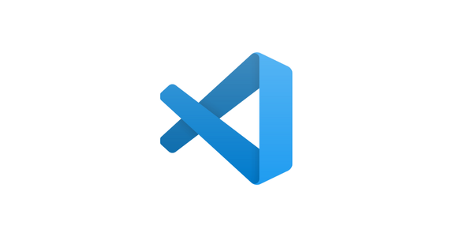
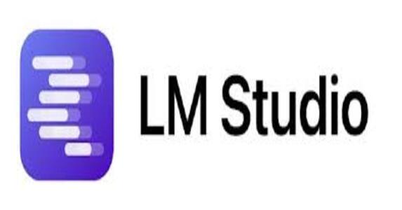
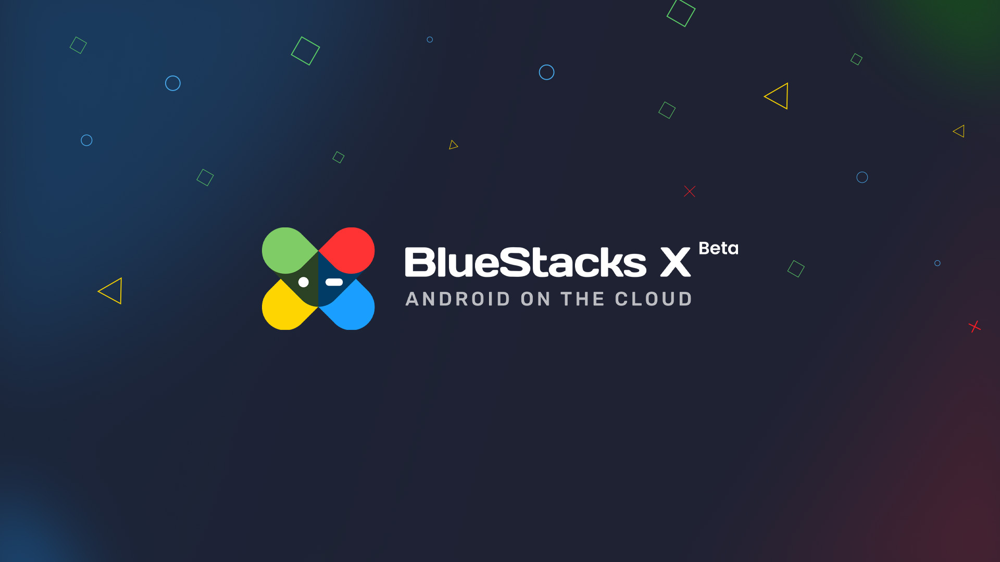
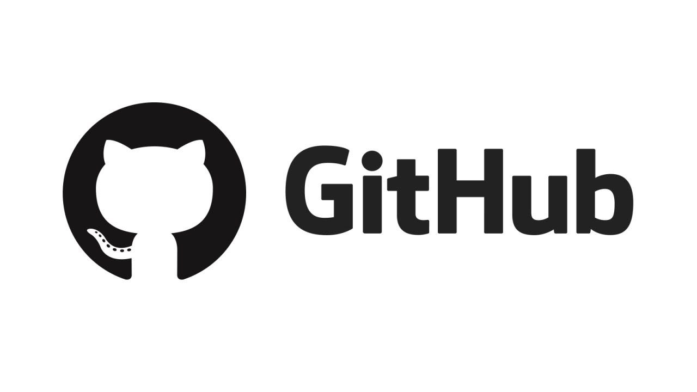
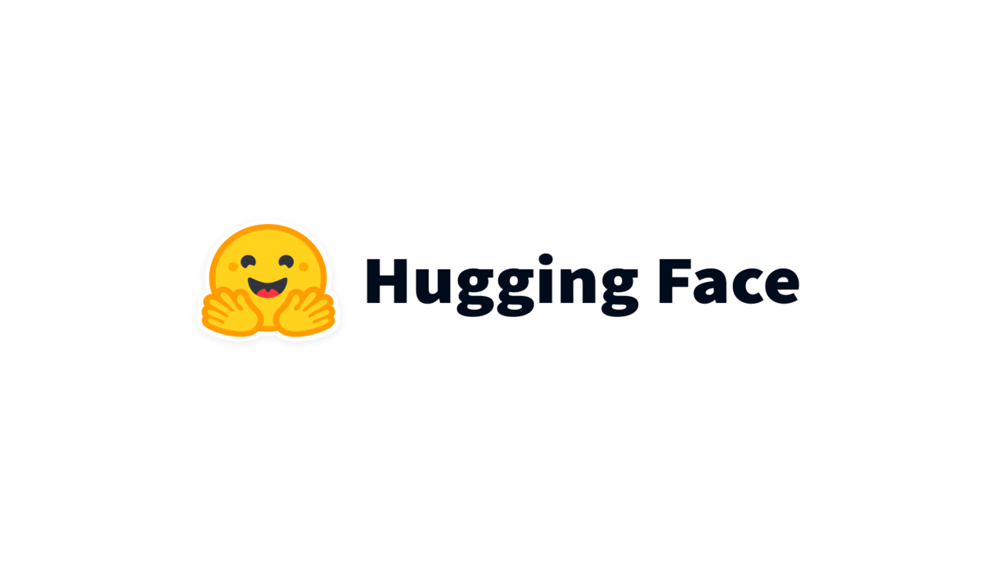
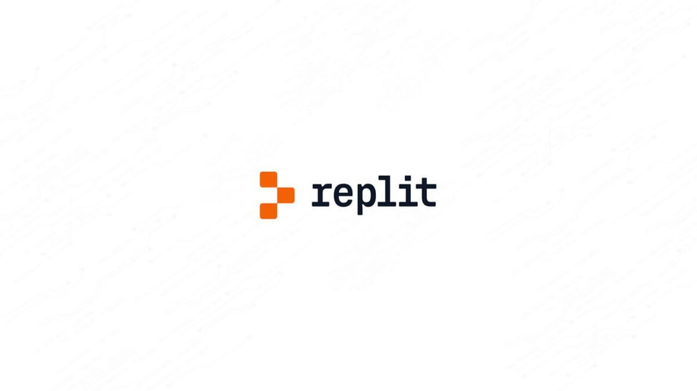
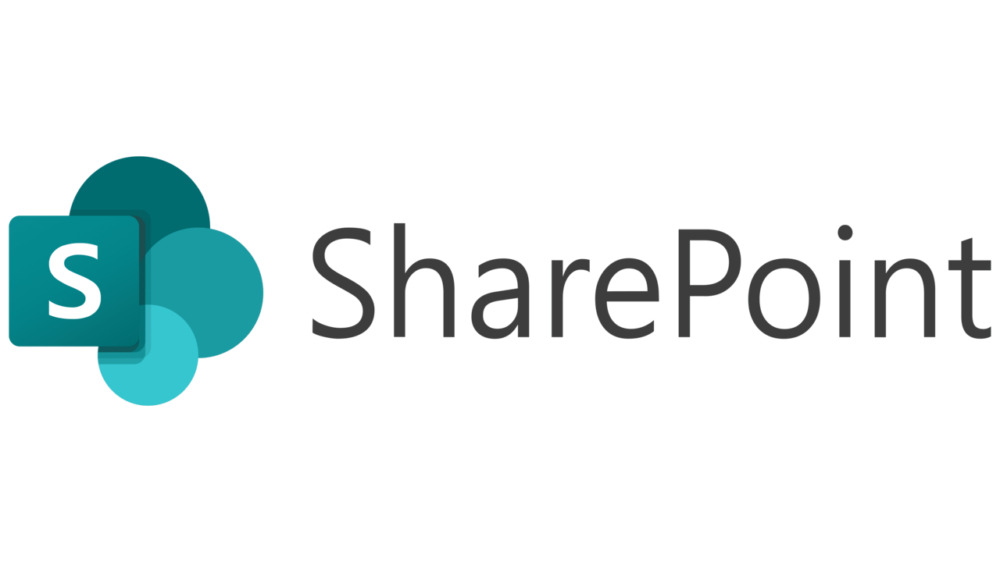
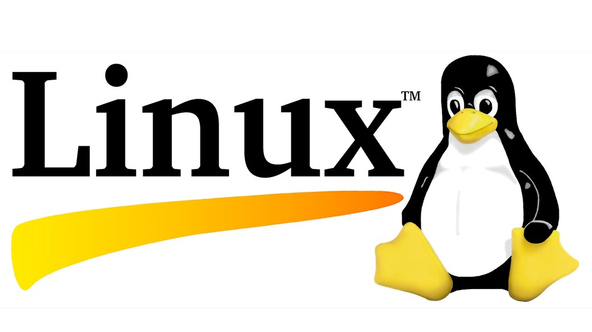

Tijdens mijn werk bij Digipunt heb ik mijn kennis van software aanzienlijk uitgebreid. Ik heb nieuwe tools en systemen leren gebruiken die zowel mijn technische als praktische vaardigheden verbeteren. Op deze pagina vind je een overzicht van de software die ik heb aangeleerd, van veelzijdige programmeeromgevingen tot gespecialiseerde besturingssystemen. Deze kennis draagt bij aan mijn vermogen om betere digitale ondersteuning en oplossingen te bieden.

Visual Studio Code (VS Code) is een populaire, open-source code-editor ontwikkeld door Microsoft. Het biedt ondersteuning voor verschillende programmeertalen, ingebouwde debugging, versiebeheer en een uitgebreide set extensies, waardoor ontwikkelaars efficiënt kunnen werken aan hun projecten.

LM Studio is een geïntegreerde ontwikkelomgeving (IDE) die speciaal is ontworpen voor machine learning en data-analyse. Het biedt een scala aan tools voor het bouwen, trainen en evalueren van machine learning-modellen, en ondersteunt verschillende programmeertalen en frameworks.
VirtualBox is een open-source virtualisatieplatform ontwikkeld door Oracle. Het stelt gebruikers in staat om meerdere besturingssystemen tegelijkertijd op één computer te draaien, wat handig is voor testen, ontwikkeling en het uitvoeren van verschillende softwareomgevingen.

BlueStacks is een Android-emulator die gebruikers in staat stelt om Android-apps en -games op hun pc of Mac uit te voeren. Het biedt een gebruiksvriendelijke interface en ondersteuning voor een breed scala aan Android-applicaties, waardoor het een populaire keuze is voor ontwikkelaars.

GitHub is een webgebaseerd platform voor versiebeheer en samenwerking, waarmee ontwikkelaars code kunnen opslaan, delen en gezamenlijk aan projecten kunnen werken, terwijl ze gebruikmaken van krachtige functies zoals pull requests, issues en integraties met andere tools om de softwareontwikkeling te stroomlijnen.

Hugging Face is een toonaangevend platform voor natuurlijke taalverwerking en machine learning, dat een uitgebreide bibliotheek van voorgetrainde modellen en tools biedt, waarmee ontwikkelaars eenvoudig geavanceerde AI-toepassingen kunnen bouwen en implementeren.

Replit is een online ontwikkelomgeving die het eenvoudig maakt om code te schrijven, te delen en samen te werken aan projecten. Het ondersteunt een breed scala aan programmeertalen en biedt functies zoals real-time samenwerking, ingebouwde versiebeheer en een gebruiksvriendelijke interface, waardoor het ideaal is voor zowel beginners als ervaren ontwikkelaars.

SharePoint is een webgebaseerd platform van Microsoft dat wordt gebruikt voor documentbeheer en samenwerking. Het biedt tools voor het delen van bestanden, het beheren van projecten en het samenwerken aan documenten, waardoor teams efficiënter kunnen werken en informatie gemakkelijk kunnen delen.
iOS is het mobiele besturingssysteem ontwikkeld door Apple, dat wordt gebruikt op iPhones, iPads en Macs. Het staat bekend om zijn gebruiksvriendelijke interface, stabiliteit en veiligheid, en biedt een consistente ervaring voor gebruikers van Apple-apparaten.

Linux is een open-source besturingssysteem dat bekend staat om zijn stabiliteit, flexibiliteit en veiligheid, en wordt veel gebruikt in servers, desktops en embedded systemen, waardoor ontwikkelaars en gebruikers volledige controle hebben over hun softwareomgeving.
{kind=link}
{kind=link}
{kind=link}
{kind=link}
{kind=link}
{kind=link}
{kind=link}
{kind=link}
{kind=link}
{kind=link}